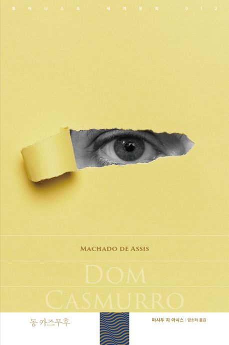

추천도서
부키만의 차별화된 AI추천 서비스가 당신의 취향에
딱 맞는 책을 엄선하여 골라드립니다.
추천도서
부키만의 차별화된 AI추천 서비스가 당신의 취향에
딱 맞는 책을 엄선하여 골라드립니다.
“동 카즈무후”
마샤두 지 아시스 저자(글) ㅣ 임소라 번역
황폐해진 마음에서 소설의 경계까지,질투와 의심이란 작은 돌멩이 하나로 허물어뜨리는 작품
브라질의 대문호이자 심리소설의 대가인 마샤두 지 아시스의 대표작이다. 국내 초역이며, 아시아권 언어로 번역되는 것도 이번이 처음이다.
그가 남긴 열 편의 장편소설과 이백여 편의 단편소설 가운데서도 가장 뛰어난 작품으로 손꼽힌다. 브라질에서는 국민 대부분이 알고 있으며 현재까지 드라마, 영화, 연극 등으로 끊임없이 재생산되고 있다.
‘무뚝뚝 경’이란 뜻의 ‘동 카즈무후’라 불리는 주인공이 자신의 친구를 닮아가는 아들을 보며, 끊임없이 아내를 의심하고 질투하는 과정을 회고의 형식으로 그렸다.
‘질투와 의심’이란 작은 돌멩이 하나로 황폐해진 주인공의 마음과 소설의 경계까지 자유롭게 넘나들며 허물어뜨리는 보기 드문 작품.
유머를 잃지 않는 문체와 백사십여 개의 짧은 장들로 이루어진 까닭에 빠르게 읽히지만, “믿을 수 없는 화자와 알 수 없는 진실은 독자를 좀처럼 쉽게 놓아주지 않는다”(소설가 정소현 추천사).